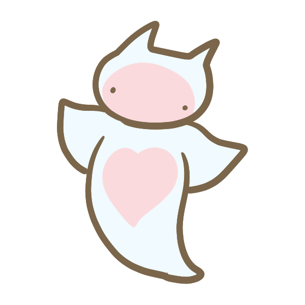
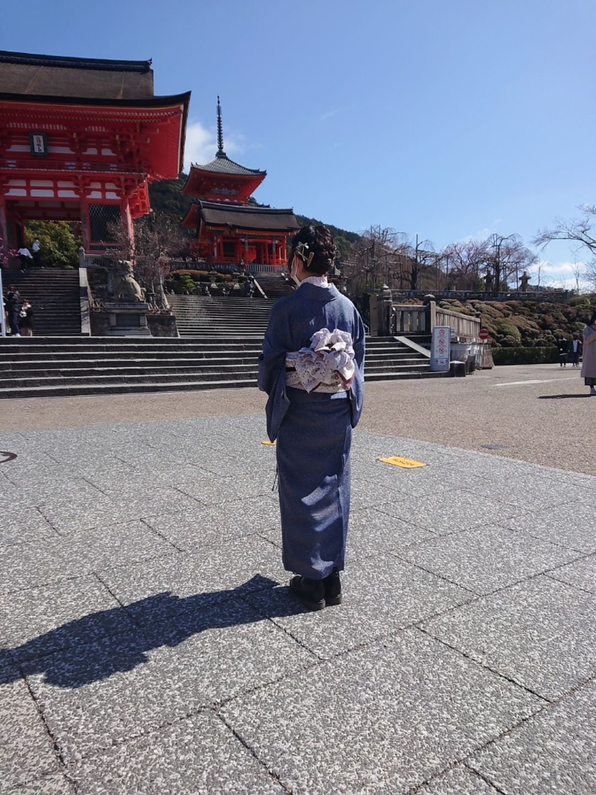

My Homepage

名前：岩本 真理子（いわもと まりこ）
生年月日：1998/07/29
出身地：埼玉県
出身校：大妻女子大学
趣味：飼い猫と遊ぶこと、動画視聴

将来は『PM』になりたい
私の強みは「課題に向き合い改善することができる」ことです。
この強みを生かして、問題にぶつかったときに
最善の解決策を考えることができるそんなPMになりたいです。
また、周りから気軽に頼って貰え、仕事がちゃんと円滑に進むよう周りを纏め、
指示を出したりすることができるのが目標です。